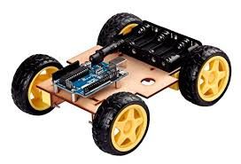

Building Your First 4-Wheel Robot: A Step-by-Step Guide
This guide will walk you through the basic steps of creating a simple 4-wheel robot. Remember that specific components and code may vary depending on your chosen parts.
Step 1: Gathering the Components
First, you'll need to gather all the necessary parts. Here's a basic list:
- Robot Chassis (4-wheel drive recommended)
- 4 x DC Motors with Wheels
- Motor Driver (e.g., L298N)
- Arduino Uno or similar microcontroller
- Power Supply (Battery pack and voltage regulator if needed)
- Jumper Wires
- Breadboard (Optional, but helpful for prototyping)
- Mounting hardware (screws, standoffs, etc.)
Step 2: Assembling the Chassis and Motors
Attach the DC motors to the robot chassis according to the manufacturer's instructions. Ensure the wheels are securely mounted to the motor shafts.

Step 3: Wiring the Motors to the Motor Driver
Connect the motor wires to the motor driver. Typically, a motor driver will have inputs for motor power, ground, and control signals for each motor.

Refer to the datasheet of your specific motor driver for the correct wiring diagram.
Step 4: Connecting the Motor Driver to the Arduino
Now, connect the control pins of the motor driver to the digital output pins of your Arduino. You'll also need to connect the power and ground lines between the Arduino and the motor driver (making sure the voltage levels are compatible).
Example connections (may vary):
- Motor 1 Control Pins (e.g., IN1, IN2) to Arduino Digital Pins (e.g., 2, 3)
- Motor 2 Control Pins (e.g., IN3, IN4) to Arduino Digital Pins (e.g., 4, 5)
- Motor Driver Enable Pins (ENA, ENB) to Arduino PWM Pins (for speed control, e.g., 9, 10)
Step 5: Powering the Robot
Connect your power supply to the motor driver and the Arduino. Ensure you are providing the correct voltage to each component. A separate power supply for the motors is often recommended to avoid drawing too much current from the Arduino's power supply.
Step 6: Arduino Code for Basic Movement
Here's a basic Arduino code snippet to control the robot's movement.
// Define motor driver control pins
const int motor1_in1 = 2;
const int motor1_in2 = 3;
const int motor2_in1 = 4;
const int motor2_in2 = 5;
const int enableA = 9; // PWM for motor 1 speed
const int enableB = 10; // PWM for motor 2 speed
void setup() {
// Set motor control pins as outputs
pinMode(motor1_in1, OUTPUT);
pinMode(motor1_in2, OUTPUT);
pinMode(motor2_in1, OUTPUT);
pinMode(motor2_in2, OUTPUT);
pinMode(enableA, OUTPUT);
pinMode(enableB, OUTPUT);
// Initialize motor speeds to 0
analogWrite(enableA, 255); // Set initial speed (0-255)
analogWrite(enableB, 255);
stop();
}
void loop() {
// Basic movement commands - you can control these with sensors, Bluetooth, etc.
forward();
delay(2000);
backward();
delay(2000);
left();
delay(1500);
right();
delay(1500);
stop();
delay(3000);
}
void forward() {
digitalWrite(motor1_in1, HIGH);
digitalWrite(motor1_in2, LOW);
digitalWrite(motor2_in1, HIGH);
digitalWrite(motor2_in2, LOW);
}
void backward() {
digitalWrite(motor1_in1, LOW);
digitalWrite(motor1_in2, HIGH);
digitalWrite(motor2_in1, LOW);
digitalWrite(motor2_in2, HIGH);
}
void left() {
digitalWrite(motor1_in1, HIGH);
digitalWrite(motor1_in2, LOW);
digitalWrite(motor2_in1, LOW);
digitalWrite(motor2_in2, HIGH);
}
void right() {
digitalWrite(motor1_in1, LOW);
digitalWrite(motor1_in2, HIGH);
digitalWrite(motor2_in1, HIGH);
digitalWrite(motor2_in2, LOW);
}
void stop() {
digitalWrite(motor1_in1, LOW);
digitalWrite(motor1_in2, LOW);
digitalWrite(motor2_in1, LOW);
digitalWrite(motor2_in2, LOW);
}
Note: This is a very basic code. You'll need to adapt it based on your motor driver and desired functionality.
Step 7: Testing and Further Development
Upload the code to your Arduino and test the robot's movement. You can now expand on this basic platform by adding sensors, a control interface, and more complex behaviors.
